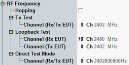

This section configures the hopping and channel/frequency for TX test and loopback test.

If enabled, then the R&S CMW transmits on all possible Bluetooth channels in a pre-determined sequence.
Option R&S CMW-KS610 is required.
Remote command:Defines the test mode channel, the frequency of the selected channel is shown. If the hopping checkbox is selected, then the channel and frequency settings for TX test and loopback test are ignored.
Option R&S CMW-KS610 is required for TX test and loopback test.
Option R&S CMW-KS611 is required for direct test mode.
Remote command: